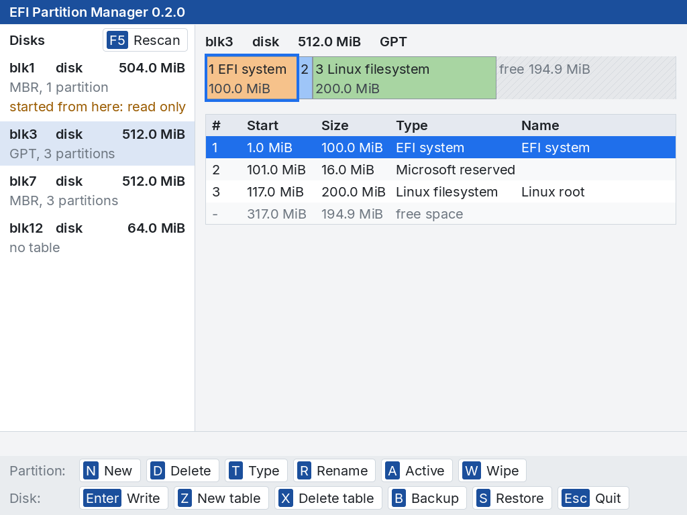
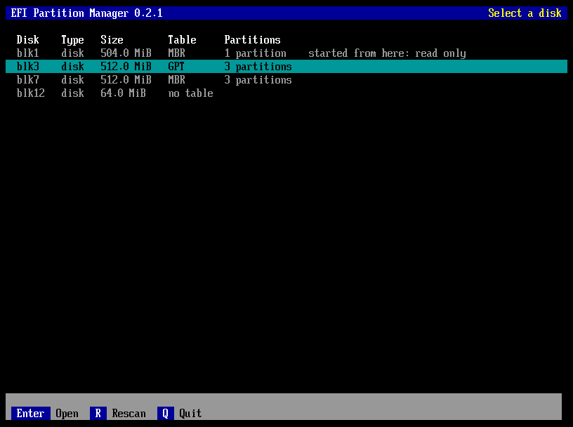
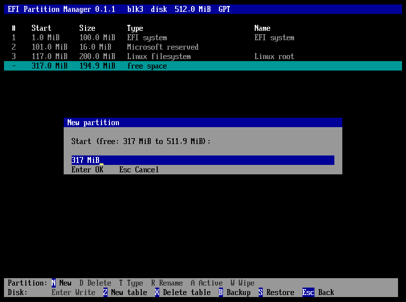
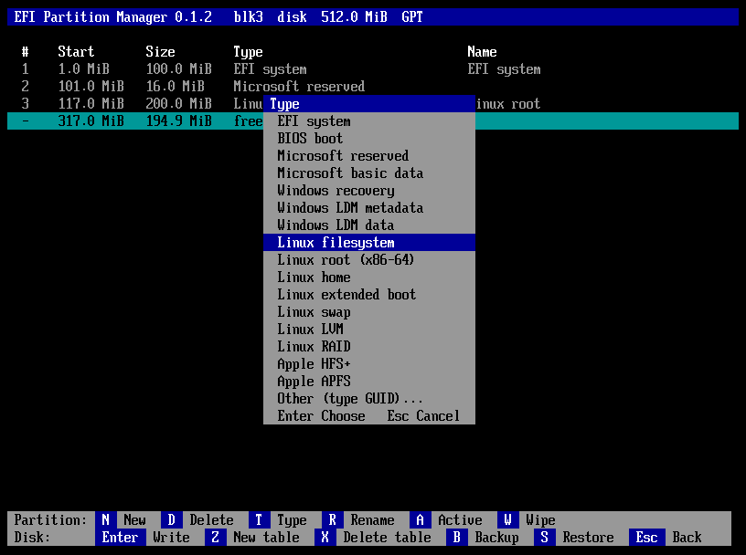
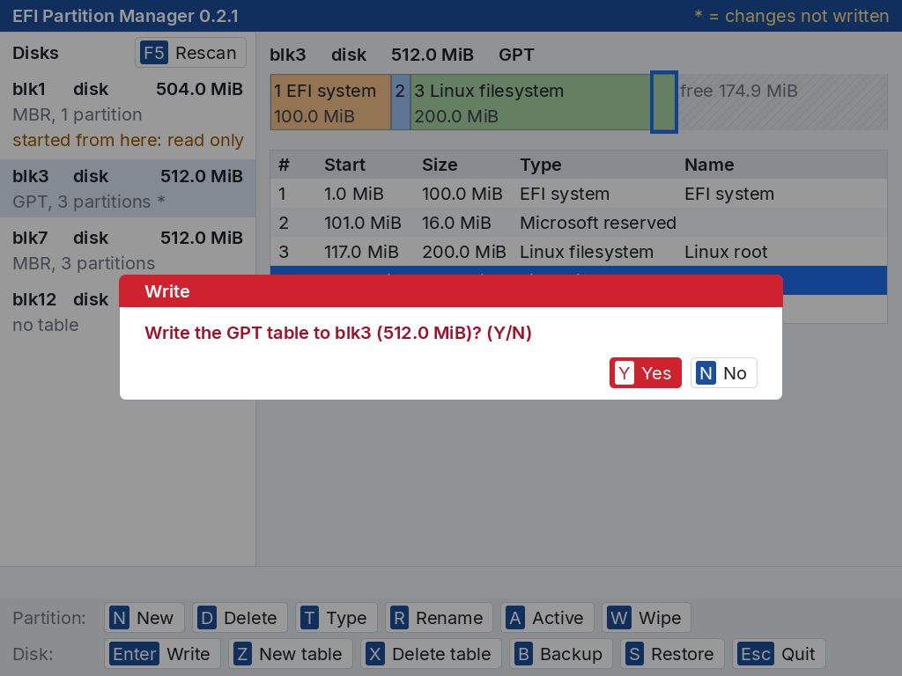
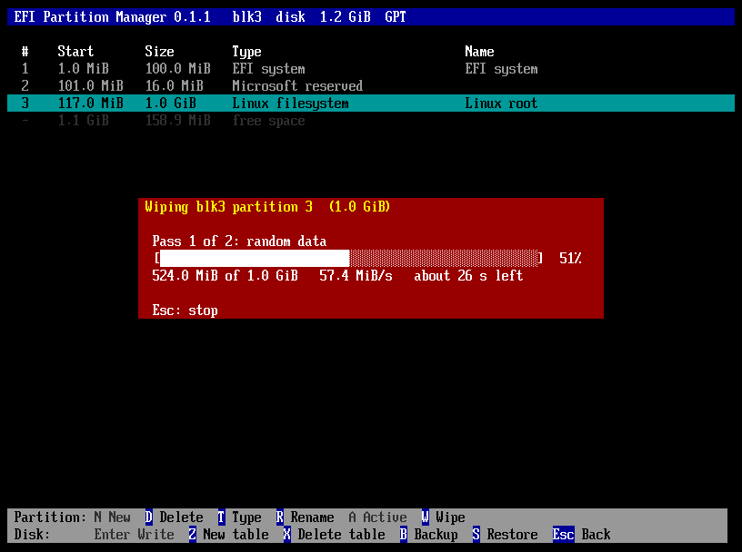

![EFI Partition Manager]()
Welcome
1.1 · What partmgr is
EFI Partition Manager is a program for UEFI firmware that shows, creates and changes partition tables, GPT and MBR, before any operating system has started. It is one file, partmgr.efi, started from the firmware boot menu or from a UEFI shell.
A disk is divided into partitions, and a small table at its beginning — the partition table — says where each partition starts, how big it is and what it is for. Preparing a disk for a new system, a recovery stick or a second drive starts with that table, and usually means booting a whole Linux or Windows environment just to run a partitioning tool. partmgr does it directly in the firmware.

What it offers:
- GPT and MBR, read and written in full: MBR with primary, extended and logical partitions, the active flag and the CHS fields.
- See first, write later: changes are made on the screen; the disk changes only when you choose Write and confirm.
- Backup and restore: the partition table of a disk saved to a file, and written back exactly as it was.
- Wipe: a partition overwritten twice, random data then zeros, with a progress bar and the time left.
- Safe by design: the disk partmgr was started from is never written; damaged tables are recognised and explained.
- Readable: types chosen from a list, sizes such as
512Morrest, no codes to remember. - A window and the mouse: a graphical window used with the mouse or the keyboard; text screens where the firmware has no graphics.
- Its own code: written from scratch, with its own UEFI definitions, in one file.
1.2 · What partmgr does not do
partmgr works on partition tables. It does not format partitions (the firmware or the operating system does that), does not resize or move them, and does not install boot code. Deleting a partition removes it from the table; its data stays on the disk until something overwrites it.
The one thing partmgr writes inside a partition is a wipe, and only when asked: it overwrites the whole partition so that its data is gone.
partmgr.efi is the file, and partmgr the short name this manual uses for the program.1.3 · Who this manual is for
partmgr is made for people who know what a partition table is and how to reach a UEFI shell or the firmware boot menu. The window is therefore terse: short questions, fields with just a label, no explanations. The explanations are in this manual. What partmgr never drops is the confirmation of every operation that writes to a disk.
| If you want to… | Read |
|---|---|
| Put partmgr on a stick and start it | chapter 2 |
| Learn the window in a few minutes | chapter 3 and chapter 4 |
| Change a disk and write the result | chapter 6 and chapter 7 |
| Keep a copy of a table, or destroy the data of a partition | chapter 8 and chapter 9 |
| Understand a note, a message or a refusal | chapter 10 and chapter 11 |
How partmgr is built and tested is in the technical manual.
1.4 · Conventions
| You see | It means |
|---|---|
| N Enter Esc | Keys to press. Letters work in upper or lower case. Every key has a button in the window, and the manual names the key. |
| New table | Text shown by partmgr: buttons, titles, questions, messages. |
512M | Something you type, or a file name. |
blk3 | A disk, as partmgr names it. |
| Delete / wipe | To delete a partition removes it from the table; to wipe it destroys its contents. The manual never uses one word for the other. |
| Blue box Note | Something useful to understand. |
| Green box Tip | A better or safer way to do something. |
| Yellow box Warning | A behaviour that may surprise you or lose data. |
Installation and first start
2.1 · Requirements
| Requirement | Detail |
|---|---|
| Firmware | A computer or virtual machine with UEFI firmware on x86-64. |
| Screen | A graphics screen of at least 640 × 480 for the window — practically every UEFI machine with a monitor has one. Without it partmgr shows the text screens on the text console of the firmware (80 columns by 25 rows at least). |
| Mouse | Optional. A USB mouse works even when the firmware has no mouse support (see section 3.2). The keyboard does everything. |
| A FAT volume | One the firmware can read, for partmgr.efi itself — and, for backups, one that can be written. |
2.2 · Getting partmgr.efi
Ready-made, partmgr.efi is on the release page of the project, with its checksum in SHA256SUMS.
- Download
partmgr.efiandSHA256SUMSfrom the release page. - Check the download:
sha256sum -c SHA256SUMS.
To build it yourself, on Linux:
git clone https://github.com/nic-fio/EFI_PARTITION_MANAGER.git
cd EFI_PARTITION_MANAGER
make
ls -l build/partmgr.efiThe build needs gcc, GNU ld, make and python3; the technical manual has the details and the tests.
2.3 · Putting it on a stick
Copy partmgr.efi to a FAT-formatted stick. Two common layouts:
| Layout | Where the file goes | How it starts |
|---|---|---|
| The program of the stick | \EFI\BOOT\BOOTX64.EFI | Choosing the stick in the firmware boot menu starts partmgr directly. |
| A tool next to a shell | A folder such as \EFI\tools\partmgr.efi | Started from the UEFI shell. |
2.4 · Starting and leaving partmgr
- From the firmware boot menu — usually opened with F12, F11, F8 or Esc during power-on — choose the stick. From a UEFI shell, type the file with its volume and folder.
- partmgr opens the window when the firmware has a graphics screen of at least 640 × 480, and the text screens otherwise. In the window it opens the first disk it may change.
- To leave, press Esc or click Quit; in the text screens, Q or Esc on the list of disks. If the disk shown has changes that are not written, partmgr asks first.
fs0:\> fs0:\EFI\tools\partmgr.efiWhen you leave, the screen is cleared and you are back where you started partmgr from: the shell, with its cursor, or the firmware, which goes on with its boot order or its setup menu.
2.5 · Secure Boot
With Secure Boot active the firmware starts only signed programs. partmgr.efi is a file of its own, so it needs a signature with a key the machine trusts.
With your own keys, on Linux (package sbsigntool):
sbsign --key db.key --cert db.crt --output partmgr-signed.efi build/partmgr.efi
sbverify --cert db.crt partmgr-signed.efiThe certificate must be in the firmware's db database (enrolled from the firmware setup), or — on machines that boot through shim — in the MOK list (mokutil --import db.der). Otherwise, disable Secure Boot in the firmware setup while you use partmgr.
The window in brief
3.1 · The parts of the window
partmgr shows everything in one window, used with the mouse or with the keyboard. Where the firmware has no graphics screen it shows text screens instead, with the same keys.
| Part | What it shows |
|---|---|
| Title bar | EFI Partition Manager 0.2.1 on the left; on the right, in yellow, started from here: read only, write-protected or * = changes not written for the disk shown. |
| The disks, on the left | Every whole disk with a medium in it: its name, the kind of connection (NVMe, SATA, ATA, USB, SCSI, SAS, SD, eMMC, UFS, iSCSI, or just disk when the firmware does not say), its size, the kind of table and the number of partitions. Empty drives and single partitions are not listed. F5 Rescan is at the top. |
| The selected disk, on the right | Its name, kind, size and table; a bar that draws the disk to scale; under it the table of its partitions and free areas (see section 3.3). |
| The message line | The result of the last action in green, or why it could not be done in red. |
| The buttons | Two rows that never change. Partition: the actions on the selected row — New, Delete, Type, Rename, Active, Wipe. Disk: the actions on the whole disk — Write, New table, Delete table, Backup, Restore, Quit. Each button shows its key. |
The bar
One coloured block per partition, to scale: EFI system orange, Linux green, swap red, Microsoft, Windows, FAT and NTFS blue, anything else lilac. The free space is hatched grey. On an MBR disk the extended partition is a beige band behind its logical partitions. Each block carries its number and type, or only the number, or nothing, as room allows, and its size below when it fits. The selected row has a blue frame in the bar.
Names and marks of the disks
- Names. Disks are called
blkN, where N counts every block device of the firmware, partitions included — which is why the numbers are not consecutive. They stay the same from one start to the next as long as the hardware does not change. - started from here: read only marks the disk partmgr was loaded from. It can be looked at and backed up, never changed: changing the table under the running program could destroy it.
- write-protected marks a medium the firmware reports as read-only.
- no table: the disk has no partition table — new, erased, or with a file system written directly on the whole disk. unreadable: the firmware could not read it.
- A star after the number of partitions, and * = changes not written in the title bar, say that the selected disk has changes that are not written yet.
3.2 · Mouse and keys
Everything can be done with the mouse and everything with the keyboard; the two can be mixed.
| With the mouse | With the keyboard | Does |
|---|---|---|
| Click a disk | Page Up Page Down, or Tab then ↑ ↓ | Opens another disk. |
| Click a row of the table, or a block of the bar | ↑ ↓ Home End | Selects a partition or a free area. |
| Click a button | The key shown on it | The action. |
| Click F5 Rescan | F5 | Reads the disks again (after plugging in a stick); says Disks read again. |
| Click Esc Quit | Esc | Leaves partmgr. |
Tab moves the arrow keys between the table of the disk and the list of disks: the one they move in has its selection in strong blue, the other in pale blue. Page Up and Page Down change the disk at any time. The button under the mouse pointer is highlighted. In the bar, a click on a logical partition selects it; the extended partition itself is selected in the table.
The mouse
partmgr uses the firmware's mouse when the firmware has one; when it has not — many do not — partmgr drives a USB mouse itself, through the simple boot protocol that USB mice offer. Tablets, touch screens and PS/2 mice work only when the firmware supports them. Without a mouse the pointer is not shown, and the keyboard does everything.
-device usb-tablet, which virt-manager usually adds) is not a mouse for partmgr: add a USB mouse next to it.qemu-system-x86_64 -bios OVMF.fd ... -usb -device usb-mouse
qemu-system-x86_64 -machine q35 -bios OVMF.fd ... -device qemu-xhci -device usb-mouseLeaving a disk that has changes not written — opening another disk, F5, Esc — asks Discard the unwritten changes? (Y/N) first (see section 7.3).
3.3 · The table of a disk
The table lists the partitions and the free areas, in the order they have on the disk.

| Column | Content |
|---|---|
| # | The partition number: the entry of a GPT, or 1–4 (primary and extended) and 5 onward (logical) on an MBR. - for a free area. A star (4*) marks what changed since the table was read. |
| Start | Where the partition starts, from the beginning of the disk. |
| Size | Its size, in binary units: 1 MiB = 1024 KiB, 1 GiB = 1024 MiB. |
| Type | What the partition is for (EFI system, Linux filesystem, NTFS/exFAT…), or the raw type — the start of the GUID, or type 9C — when partmgr has no name for it. |
| Flags | MBR only: active (the partition old BIOS systems start) or logical. |
| Name | GPT only: the name stored with the partition. |
Free areas appear in grey: free space, or on an MBR disk free space (for logical partitions) when the area is inside the extended partition. Only areas of at least 1 MiB are shown, starting on a 1 MiB boundary. Changed rows are amber, with their star. A disk without a table shows No partition table.
Under the table, Note: lines explain anything unusual partmgr found in the table (see section 10.3).

A key that does not apply
Every button is always there. One that does not apply to the selected row says why in one short line:
| You press | partmgr answers |
|---|---|
| N on a partition | Select a free area. |
| N on a disk without a table | No partition table: Z makes one. |
| D T R A W on free space | Select a partition first. |
| R on an MBR disk | MBR partitions have no name. |
| A on a GPT disk | GPT partitions have no active flag. |
| Enter with nothing to write | No changes to write. |
| Any change on a disk that can only be read | A box titled Read only (see section 10.1). |
3.4 · Dialogs
Questions appear in a box over the window, which is dimmed meanwhile. A box with a red title asks before something that destroys data. The buttons show their keys.
| Dialog | How to answer |
|---|---|
| A message | OK, or any key, closes it. |
| A field | The proposed text is selected, and the first character you type replaces it; ← → Home End Backspace Del edit it. OK or Enter accepts, Cancel or Esc cancels. |
| A list | A click on an item chooses it; or move with ↑ ↓ Page Up Page Down Home End, and Choose or Enter. Cancel or Esc cancels. |
| A question, ending in (Y/N) | Yes or Y; No, N or Esc. Enter does nothing there (see section 7.1). |
3.5 · Screen sizes
partmgr keeps the resolution the firmware set — usually the monitor's own — and fits the window to it, from 640 × 480 up. The text grows with the height of the screen, in the same proportion on a 1080-row and on a 2160-row (4K) monitor; on a very large screen the pointer is twice as large. On a narrow screen the list of disks is narrower, the buttons lose their group names and get narrower, and take more rows if they must.
| Screen height (pixels) | up to 600 | up to 900 | up to 1300 | up to 1700 | up to 2000 | more |
|---|---|---|---|---|---|---|
| Text size (pixels) | 16 | 20 | 26 | 32 | 40 | 52 |
3.6 · The text screens
Where the firmware has no graphics screen of at least 640 × 480 — a server reached only through a serial console, for example — partmgr shows two text screens instead: the list of disks, and the screen of one disk. They do the same things with the same keys, answer with the same messages and ask the same questions.


| Screen | Keys |
|---|---|
| List of disks | ↑ ↓ Home End move, Enter opens a disk, R reads the disks again, Q or Esc leave partmgr. |
| Screen of a disk | The keys of the window's buttons (see section 12.1); Esc goes back to the list, asking first if changes are not written. |
In the text screens a message box closes with any key (Press a key.), a field shows Enter OK Esc Cancel and a list Enter Choose Esc Cancel. When the firmware offers a text mode of 100 columns or more, partmgr switches to the narrowest such mode, for the largest characters, and puts the previous mode back when it ends; at 80 columns the key bars are drawn narrower.
First steps
4.1 · The path
A session with partmgr always follows the same order: look, keep a copy, change on the screen, write.
- Start partmgr from a stick (section 2.4) and pick the disk on the left.
- Look at the table and at any Note: under it. Looking never writes anything.
- Keep a copy of the table with B if the disk matters (section 8.1).
- Change the table on the screen: N, D, T, Z… Every change is marked with a star.
- Write with Enter, and answer Y to the red question (section 7.1).
4.2 · Preparing a new stick
An example from start to end: a stick for UEFI systems with an EFI system partition of 512 MiB and a Linux partition on the rest.
- Select the stick in the list of disks. Check its name, kind and size twice: everything on it will go.
- Press Z (New table), choose GPT. The message line says New empty GPT table. and the table shows one free area.
- With the free area selected, press N. The start proposed is
1 MiB: press Enter. For the size type512Mand Enter. Choose EFI system in the list, type a name if you want one, Enter. The message line says Partition 1 added. - Select the free area after it and press N again: Enter for the start, Enter for the size (
rest, all the free space), Linux filesystem, a name, Enter. - Press Enter (Write). The question reads Write the GPT table to blkN (…)? (Y/N): press Y. The message line says Written. and the stars are gone.
4.3 · Changing your mind
Until Write, nothing has reached the disk. To throw the changes away, open another disk, press F5 or leave partmgr, and answer Y to Discard the unwritten changes? (Y/N). F5 reads the disks again and shows the same disk as it is on the disk.
Partition tables in brief
5.1 · GPT
The GUID Partition Table is the table of UEFI.
It holds up to 128 partitions (more on some disks; a new table made by partmgr has 128 entries), each with a type and an identifier written as a GUID, and a name. It is kept twice: at the beginning of the disk and, as a backup, at the end, each copy with a checksum. Block 0 keeps a protective MBR that tells old tools the disk is in use. Disks of any size are fine.
5.2 · MBR
The Master Boot Record is the older table, in block 0 only.
It holds four entries. To have more partitions, one entry is an extended partition, a container for any number of logical partitions, each described by a small table of its own chained to the next. The active flag marks the partition old BIOS systems start. An MBR addresses at most 2 TiB (with the usual 512-byte blocks).
| GPT | MBR | |
|---|---|---|
| Partitions | 128 | 4 primary, or 3 primary + extended with any number of logical |
| Disk size | no practical limit | 2 TiB |
| Copies | two, with checksums | one |
| Names | yes | no |
| Starts | UEFI | UEFI and old BIOS (with boot code from a boot loader) |
5.3 · Alignment
partmgr starts partitions on 1 MiB boundaries, as current systems do: it is good for SSDs and for disks with 4096-byte sectors. A start you type is rounded up to the next MiB. On an MBR disk each logical partition needs one block before it for its table, so a free area inside the extended partition starts 1 MiB after the partition before it.
Changing a disk
6.1 · New partition
Select a free area and press N — or click New. partmgr asks, one at a time:
- On an MBR disk, primary or logical — only when the disk has no extended partition yet: Primary or Logical (creates the extended partition). A logical partition creates the extended partition over the whole free area. In a free area inside the extended partition the new partition is logical without asking.
- Start, proposed as the beginning of the free area; the dialog says where the free area begins and ends (Start (free: 317 MiB to 511.9 MiB):). Enter accepts it; typing replaces it. The start must lie in the free area. A logical partition that creates the extended one starts 1 MiB into the area: that first MiB holds the table of the chain.

- Size, proposed as
rest: all the free space after the start, whose amount the dialog shows. Or type a size:512M,20G,1.5T(see section 12.2). If it does not fit, partmgr says how much does. - Type, chosen from a list with a click, or with the arrows and Enter. Other (type GUID)... at the end takes a type GUID on a GPT disk, Other (type byte)... a type byte in hexadecimal on an MBR disk. See section 12.3.
- Name, on GPT only: up to 36 characters, or empty.

The message line then says Partition N added. Esc at any step cancels the new partition. On an MBR disk the logical partitions are numbered in disk order, so adding one in front of others renumbers them (and marks them with a star). What partmgr answers when a value does not fit is in section 11.1.
6.2 · Delete a partition
Select it and press D. The partition disappears from the table and its space becomes free: Partition N deleted. Deleting the extended partition deletes its logical partitions too; partmgr asks first when there are any: Delete the extended partition and its 2 logical partitions? (Y/N).
6.3 · Change the type
T opens the list of types with the current one selected; the message line then says Partition N: type changed. The extended partition keeps its type (The extended partition keeps its type.), and no other partition can be given an extended type: extended partitions are made by adding logical ones.
6.4 · Rename (GPT)
R changes the name of a GPT partition: up to 36 characters, or empty (Partition N renamed.). MBR partitions have no names.
6.5 · Active flag (MBR)
A makes the selected partition the active one (Partition N active.), or takes the flag away if it has it (Partition N no longer active.). Only one partition is active at a time: setting it moves it. The extended partition cannot be active. UEFI ignores the flag; old BIOS systems start the active partition.
6.6 · New partition table
Z replaces the table with a new, empty one: GPT or MBR, chosen from a list (New empty GPT table.). A new table is made from zero: every partition of the disk goes, the disk gets new identifiers, and block 0 has no boot code — boot code belongs to boot loaders, which install their own. Add partitions, then Write.
6.7 · Delete the partition table
X removes the table altogether (Partition table deleted.). After Write the disk looks empty to every system; the data of the partitions is not touched.
Writing the changes
7.1 · Write
When the window shows the table you want, press Enter or click Write. partmgr asks, in red, one question.
For example Write the GPT table to blk3 (512.0 MiB)? (Y/N) — or, after X, Delete the partition table of blk3 (512.0 MiB)? (Y/N).

- Press Y or click Yes: the table is written, read back from the disk and shown again, and the message line says Written.
- Or press N, Esc or click No: nothing happens, and the message line says Nothing was written.
7.2 · What Write writes
| Table | What is written |
|---|---|
| GPT | The protective MBR and both copies of the table. Writing therefore also repairs a table whose primary or backup copy was damaged, and moves the backup copy to the real end of a disk that was enlarged (a disk image, a cloned disk). A hybrid MBR (see section 10.3) is left as it is. |
| MBR | Block 0 with the entries, and the chain of tables of the logical partitions. The boot code already in block 0 is kept; the disk signature too. If the disk had a GPT before, its headers are cleared, so that no system finds the old GPT. |
| No table (after X) | Block 0 and both GPT headers are cleared. |
Write never touches the data inside the partitions. If the disk refuses the write, a box says why and the message line reads Not written: ….
7.3 · Leaving without writing
Opening another disk, reading the disks again (F5) or leaving partmgr (Esc) with changes not written asks first, in red, Discard the unwritten changes? (Y/N): Y leaves them, N stays. In the text screens Esc goes back to the list of disks and asks the same. Leaving without writing leaves the disk exactly as it was.
Backup and restore
8.1 · Backup
B saves the partition table as it is on the disk to a small file — changes on the screen that are not written yet are not in it.
- Press B. partmgr proposes the file of the last backup or restore since it was started; the first time, a file on the volume it was started from, or on the first volume that can be written when that one cannot:
fs1:\partmgr-blk7.bin. - The dialog lists the volumes, marking the read-only ones with
(ro). Accept the name or type another path, always with its volume (fs1:\backups\disk.bin; the folder must exist). - If the file exists, partmgr asks The file exists. Replace it? (Y/N).
- The message line says Saved fs1:\partmgr-blk7.bin (512 bytes).
A backup is small: one or a few kilobytes for an MBR, about 34 KB for a GPT on a disk with 512-byte blocks. It holds the blocks of the table exactly as they are on the disk — block 0 and the tables of the logical partitions for an MBR; the protective MBR and both GPT copies for a GPT — with the size of the disk and a checksum. It does not hold any data of the partitions. A backup can be made of every disk, the read-only ones included; a disk without a table has nothing to back up.
8.2 · Restore
S writes a backup back to the disk.
- Press S. partmgr proposes the file of the last backup or restore since it was started; type another path if needed.
- partmgr reads the file and asks, in red, Restore fs1:\partmgr-blk7.bin to blk7? (Y/N) — with Unwritten changes are lost. added when there are some.
- After Y it checks the file before writing anything: it must be a partmgr backup, undamaged, made on a disk of the same size and block size. Then the table is written and read back: Restored from fs1:\partmgr-blk7.bin.
Why a file can be refused is in section 11.2.
8.3 · A safe routine
- Before changing a disk that matters: B to a stick.
- Make the changes, then Write.
- If the result is not what you wanted, S brings the old table back — and with it every partition that was there, since their data was never touched.
Wiping a partition
9.1 · Wipe
Destroying the data of one partition, when the disk goes to someone else or the data must not come back.
Select the partition and press W. partmgr asks, in red, with the partition's number, type, size and name: Wipe partition 3 of blk3 (Linux filesystem, 1.0 GiB, "Linux root")? (Y/N). The wipe then starts at once: it is not a change of the table, so it does not wait for Write.
It makes two passes over every block of the partition: first random data, then zeros. The random pass leaves nothing of the old contents; the zeros make the partition read as empty to every tool afterwards, with no trace of the old file system. The partition stays in the table with its type and name: only its contents are gone.
9.2 · Progress, and stopping

While it runs, partmgr shows which pass it is in, a bar with the percentage of the pass, how much of the partition the pass has written, the speed, and the time left for both passes (estimating the time... for the first half second). A large disk takes time: at 150 MiB/s, a 1 TiB partition takes about four hours for the two passes.
Esc, or a click on Stop, asks Stop the wipe? (Y/N). Stopping leaves the partition partly overwritten — its old data is damaged either way — and the message line says in which pass it stopped: Wipe of partition 3 stopped in pass 1: partly overwritten. At the end the message line says how much was overwritten and how long it took: Partition 3 wiped (1.0 GiB, 2 passes, 38 s).
9.3 · What can be wiped
| Case | Wipe | Why |
|---|---|---|
| Any partition of a disk that can be changed | Yes | — |
| The disk partmgr was started from, a write-protected disk | No | They can only be read (section 10.1). |
| The extended partition of an MBR disk | No: Wipe the logical partitions one by one | It holds the logical partitions and their tables. Each wipe of a logical partition covers exactly its partition, and the chain stays intact. |
| Any partition while the table has changes not written | No: Unwritten changes: write or discard them first | The partition on the screen might not be where it is on the disk yet. Write the changes, or leave the disk and open it again, first. |
9.4 · SSDs, NVMe drives and USB sticks
The complete way to clear a flash drive is its own erase command (ATA Secure Erase, NVMe Sanitize or Format), which works on the whole drive, never on one partition, and which partmgr does not issue.
Safety and limits
10.1 · Disks that are only shown
The disk partmgr was started from, and write-protected disks, can be opened and backed up, but every change is refused with a box titled Read only:
- partmgr was started from this disk: it cannot be changed.
- The disk is write-protected.
There is no way around it. To change the disk partmgr runs from, start partmgr from another stick.
10.2 · Limits
| Limit | Why |
|---|---|
| MBR: four primary partitions, the extended one included | Block 0 has four entries. |
| MBR: nothing beyond 2 TiB | An MBR stores positions in 32 bits. Use GPT. Space beyond the limit is not shown as free. |
| One extended partition | A second one is not part of the MBR scheme; partmgr reads only the first. |
| GPT names: 36 characters | The size of the name field. |
| No resize, move, format | They change the data inside partitions, which partmgr touches only to wipe it. |
| Wipe: not the extended partition, not with changes pending | See section 9.3. |
10.3 · What the notes mean
When the table of a disk is unusual or damaged, partmgr shows it as well as it can and explains below the table with Note: lines. Write then writes a clean table — which is also how most of these are repaired.
| Note | Meaning, and what to do |
|---|---|
| the primary GPT … ; the backup copy is used | The copy at the beginning is damaged (it cannot be read, has no GPT signature, a wrong checksum…); partmgr shows the backup. Write repairs the primary copy. |
| the backup GPT … | The copy at the end is damaged or missing. Write repairs it. |
| the backup GPT is not in the last block (the disk was enlarged?) | Usual after copying a disk image to a bigger disk. Write moves the backup to the end and makes the new space usable. |
| the primary and backup GPT differ; the primary one is shown | The copies disagree. Write makes both like the one shown. |
| the protective MBR announces a GPT, but both GPT copies are damaged | No table can be read. Restore a backup if you have one; otherwise a new table (Z) is the way on. |
| the protective MBR is missing | A GPT without block 0. Write puts it back. |
| hybrid MBR: block 0 also describes partitions for legacy systems | An old trick to start a GPT disk on BIOS systems. partmgr keeps block 0 as it is when writing. |
| partition N lies outside the usable area of the disk / goes beyond the end of the disk | The table does not match the disk, typically after copying it to a smaller one. |
| invalid extended boot record / cannot read the extended boot record / the chain of logical partitions … | The chain of logical partitions is broken; the partitions before the break are shown. |
| logical partition N goes beyond its extended partition | The chain describes a partition that does not fit in its container. |
| more than one extended partition; only the first one is read | Not a valid MBR layout. |
| no partition table: a file system covers the whole disk | A stick formatted without partitions (a "superfloppy"). Nothing to change; a new table would hide that file system. |
| block 0 ends like an MBR, but its partition entries are invalid | Block 0 holds something else, such as boot code with no table. |
Troubleshooting
11.1 · Messages when adding a partition
They appear in a box titled New partition; nothing has changed, and N starts again.
| Message | Meaning, and what to do |
|---|---|
| The free area is too small. | A logical partition that creates the extended one needs more than 1 MiB of free space. |
| The start must be in the free area, from … | The start (rounded up to the next MiB) lies outside the free area selected. |
| The start must be a position, such as 1 MiB | rest is a size, not a start. |
| Write a size such as 512M, 20G or rest | The text is not a number. See section 12.2. |
| Unknown unit: use K, M, G or T | The letter after the number is not a unit partmgr knows. |
| The number is too large / The size is too large | Beyond what partmgr can count. |
| The size is zero. | The size is less than one block. |
| Too big: at most … | Use a smaller size, or rest. |
| Not a GUID. / A byte from 01 to FF. | What was typed after Other… is not a type GUID or a type byte. |
| The name is too long (at most 36 characters) | Shorten the name. |
| The partition overlaps another one | Start or size reach into a partition. |
| An MBR holds at most four primary partitions, the extended one included | Add logical partitions instead, or use GPT. |
| No room for an extended partition: the MBR already has four partitions | A logical partition needs an extended one, which needs a free entry. |
| A logical partition must start at least 1 MiB into the free area | The first MiB holds its table. |
| An MBR cannot address beyond 2 TiB: use GPT | See section 10.2. |
| The partition table is full | All the entries of the GPT are in use. |
11.2 · Messages of the other actions
| Action | Message | Meaning, and what to do |
|---|---|---|
| Open a disk | The disk could not be read. | The firmware reports a read error. Try F5; a failing disk may not come back. |
| Type | Only the extended partition can have an extended type | A type byte of an extended partition was typed after Other…. Extended partitions are made by adding logical ones. |
| Active | The extended partition cannot be active | Choose a primary or logical partition. |
| Write | Not written: … | The disk refused the write; the reason follows. The table on the disk is as the firmware left it: read it again with F5. |
| Backup | The file needs its volume, e.g. fs1:\table.bin. | Write the path with its volume. |
| Backup | No partition table to back up. | The disk has no table on it. |
| Backup | fs1:\… : error. | The file could not be written: a read-only volume ((ro)), a folder that does not exist, a full volume. |
| Restore | … could not be read: error. | The file does not exist or cannot be read. |
| Restore | This is not a partmgr backup file | The file was not made by B. |
| Restore | The backup file is damaged (wrong checksum / truncated / bad block range / extra data) | The file changed after it was saved. Nothing was written. |
| Restore | The backup file was made by a newer partmgr | Use the newer partmgr to restore it. |
| Restore | The backup was made on a disk of a different size / with a different block size | A backup belongs to its disk. Nothing was written. |
| Restore | The disk could not be written | The disk refused the write; read it again with F5 and check the table. |
| Wipe | Wipe of partition N failed: … | The disk refused a write during the wipe; the partition is partly overwritten. |
11.3 · Frequent problems
| Symptom | Likely cause | Remedy |
|---|---|---|
| The firmware refuses to start partmgr | Secure Boot is on and partmgr.efi is not signed with a trusted key | Sign it, or turn Secure Boot off while you use it (section 2.5). |
| Text screens instead of the window | The firmware offers no graphics screen of at least 640 × 480 | Nothing to fix: the text screens do everything (section 3.6). |
| No mouse pointer | No mouse the firmware or partmgr can use — in QEMU, the default PS/2 mouse or a USB tablet | Use the keyboard, or plug in a USB mouse; in QEMU add -device usb-mouse (section 3.2). |
| A stick plugged in is not listed | The disks were read before it was plugged in | F5 (R in the text list). |
| Every change says Read only | partmgr was started from this disk, or it is write-protected | Start partmgr from another stick (section 10.1). |
| Enter does nothing in the red question | By design | Answer with Y or N (section 7.1). |
| The disk shows only part of its space as free, on MBR | The disk is larger than 2 TiB | Use GPT (section 10.2). |
| A wipe is refused | Changes not written, or the extended partition selected | See section 9.3. |
| The new space of an enlarged disk is not free | The GPT backup copy is still where the old end was | Write the table: it moves the backup to the end (section 10.3). |
11.4 · Reporting how partmgr behaved
partmgr is tested in QEMU with OVMF and on disk images checked by other partitioning tools; reports from real machines are the most useful help. Open a hardware report on the project page, with the machine, the firmware, the version shown in the title bar and, if you can, a photograph of the window.
Reference
12.1 · Keys
Every key of the window has a button showing it; a click on the button does the same.
| Key | Where | Does |
|---|---|---|
| ↑ ↓ Home End | table, or list of disks after Tab | Move. |
| Tab | window | Moves the arrow keys between the table and the list of disks. |
| Page Up Page Down | window | The previous or next disk. |
| F5 | window | Read the disks again. |
| N | on free space | New partition. |
| D | on a partition | Delete it. |
| T | on a partition | Change its type. |
| R | on a GPT partition | Rename it. |
| A | on an MBR partition | Active flag. |
| W | on a partition | Wipe it (at once). |
| Enter | disk | Write the changes. |
| Z | disk | New table (GPT or MBR). |
| X | disk | Delete the table. |
| B | disk | Backup to a file. |
| S | disk | Restore from a file (at once). |
| Esc | window | Leave partmgr (asks if changes are not written). |
In the text screens: on the list of disks Enter opens a disk, R reads the disks again and Q or Esc leave; on the screen of a disk the keys above, and Esc back to the list. In a dialog, see section 3.4.
12.2 · Writing sizes
| You write | It means |
|---|---|
512M 512MB 512 MiB | 512 MiB. Units are binary: K = 1024 bytes, M = 1024 K, G = 1024 M, T = 1024 G; B and iB after them change nothing. Upper or lower case. |
300 | A number without a unit is in MiB. |
1.5G 0,5M | Decimals, with a point or a comma. |
4096B | Bytes. |
2048s | Blocks (sectors) of the disk. |
rest all max | Size only: all the free space after the start. |
A size that is not a whole number of blocks is rounded down; a start is rounded up to the next MiB.
12.3 · Partition types
The lists, in the order partmgr shows them (the MBR table reads down its first column, then the second). Other types are entered with Other…, and a type partmgr has no name for is shown as its GUID or byte.
| GPT type | Type GUID |
|---|---|
| EFI system | C12A7328-F81F-11D2-BA4B-00A0C93EC93B |
| BIOS boot | 21686148-6449-6E6F-744E-656564454649 |
| Microsoft reserved | E3C9E316-0B5C-4DB8-817D-F92DF00215AE |
| Microsoft basic data | EBD0A0A2-B9E5-4433-87C0-68B6B72699C7 |
| Windows recovery | DE94BBA4-06D1-4D40-A16A-BFD50179D6AC |
| Windows LDM metadata | 5808C8AA-7E8F-42E0-85D2-E1E90434CFB3 |
| Windows LDM data | AF9B60A0-1431-4F62-BC68-3311714A69AD |
| Linux filesystem | 0FC63DAF-8483-4772-8E79-3D69D8477DE4 |
| Linux root (x86-64) | 4F68BCE3-E8CD-4DB1-96E7-FBCAF984B709 |
| Linux home | 933AC7E1-2EB4-4F13-B844-0E14E2AEF915 |
| Linux extended boot | BC13C2FF-59E6-4262-A352-B275FD6F7172 |
| Linux swap | 0657FD6D-A4AB-43C4-84E5-0933C84B4F4F |
| Linux LVM | E6D6D379-F507-44C2-A23C-238F2A3DF928 |
| Linux RAID | A19D880F-05FC-4D3B-A006-743F0F84911E |
| Apple HFS+ | 48465300-0000-11AA-AA11-00306543ECAC |
| Apple APFS | 7C3457EF-0000-11AA-AA11-00306543ECAC |
| MBR type | Byte | MBR type | Byte |
|---|---|---|---|
| FAT32 (LBA) | 0C | Hidden NTFS | 17 |
| NTFS/exFAT | 07 | Hidden FAT32 (LBA) | 1C |
| Linux | 83 | Hidden FAT32 | 1B |
| Linux swap | 82 | Hidden FAT16 (LBA) | 1E |
| EFI system | EF | Hidden FAT16 | 16 |
| Linux LVM | 8E | Hidden FAT16 <32M | 14 |
| Linux RAID | FD | Hidden FAT12 | 11 |
| FAT16 (LBA) | 0E | FAT16 <32M | 04 |
| FAT32 | 0B | FAT12 | 01 |
| FAT16 | 06 | Windows LDM | 42 |
| Windows recovery | 27 | FreeBSD | A5 |
| OpenBSD | A6 | ||
| Apple HFS+ | AF |
The extended types (05, 0F, 85) and the GPT protective type (EE) are recognised but never chosen by hand: partmgr creates the extended partition itself, with 05, or 0F when it reaches beyond 8 GB.
Glossary
13.1 · Terms
- Active partition
- On an MBR disk, the partition an old BIOS starts. UEFI ignores it. See section 6.5.
- Block
- The unit a disk is read and written in: 512 or 4096 bytes. Also called a sector.
- Boot code
- The small program at the start of an MBR, written by a boot loader for BIOS systems. partmgr keeps it when changing a table and leaves it empty in a new one.
- EFI system partition
- The FAT partition UEFI firmware starts boot loaders from.
- Extended boot record
- The small table in front of each logical partition, chained to the next one.
- Extended partition
- On an MBR disk, the container of the logical partitions. See section 5.2.
- GPT
- GUID Partition Table, the partition table of UEFI. See section 5.1.
- GUID
- A 128-bit identifier, written
C12A7328-F81F-11D2-BA4B-00A0C93EC93B. - Hybrid MBR
- A GPT disk whose block 0 also describes some partitions for legacy systems. partmgr leaves it as it is.
- MBR
- Master Boot Record, the partition table of the PC BIOS, in block 0. See section 5.2.
- Partition
- A part of a disk, described in the partition table, usually holding one file system.
- Protective MBR
- Block 0 of a GPT disk: one entry covering the disk, so that old tools see it is in use.
- Superfloppy
- A disk formatted as a whole, with no partition table.
- Wipe
- To overwrite the contents of a partition so that its data is gone. Not the same as deleting it. See chapter 9.